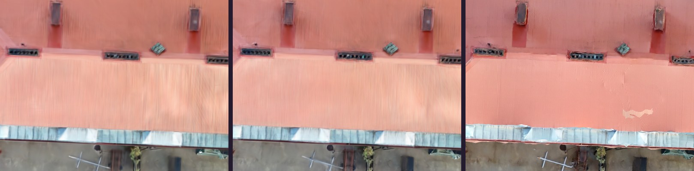
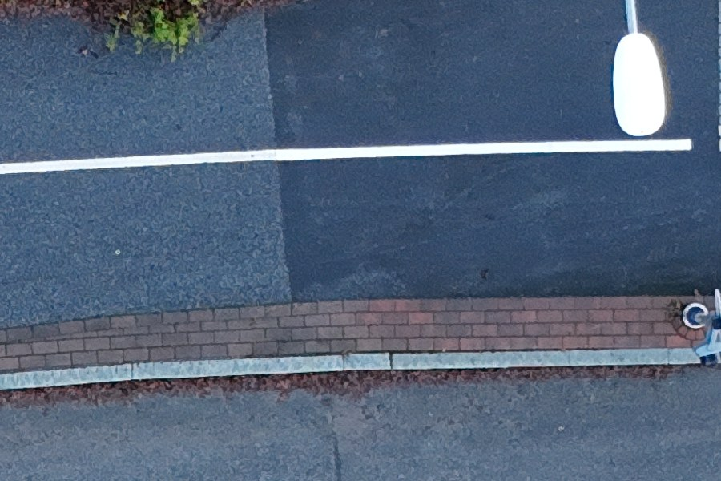
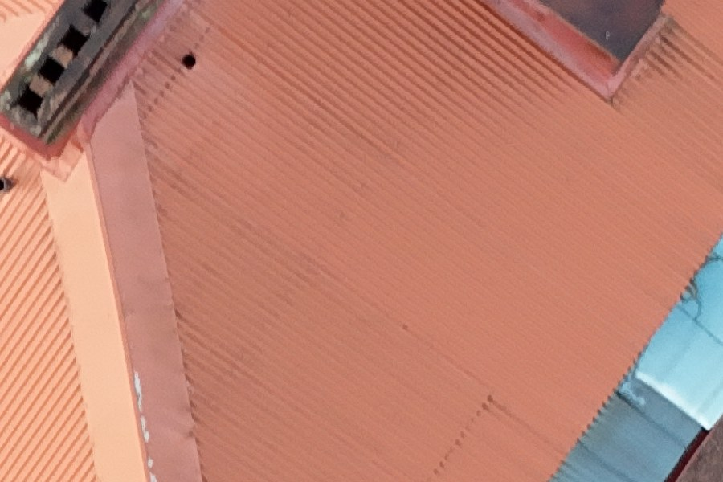
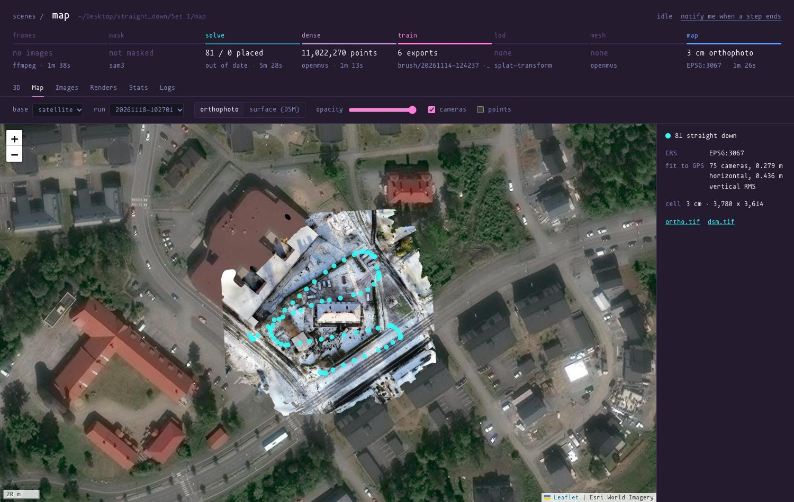

Drone Set 2: first waypoint photo mission
2026-11-18 · DJI Mini 4 Pro, waypoint-burner mission flown by DJI Fly · Niemenranta, Tampere · scene ~/Desktop/straight_down/set2
Changelog
- Set 2 processed: all 94 photos placed and georeferenced, dense cloud, 30k-step splat, orthophoto and DSM.
- Monitor Map tab (gausser
a3c77e5, pushed): cameras, points, orthophoto and DSM on satellite or OpenStreetMap for any scene with GPS. - Map from the photos:
gausser map --source meshrenders the textured mesh (true orthophoto, splat fills its holes);gausser mesh --no-cropmeshes the whole flight when the splat is cropped. - Plot splat: retrained on the 107 × 91 m plot only (crop box), for the 3D view.
- DSM preview:
gausser mapalso writesdsm-web.webp, coloured by height and hill-shaded. - waypoint-burner (other session, not committed): 1 s hover before each photo, 48 MP 4:3 photo model, obliques at -60° moved back 29 m, camera settings first in the checklist.
Map
Cameras of Set 2: cyan straight down, pink oblique with a tick towards where it looked. Base layers top right.
Orthophoto from the photos, not the splat

gausser map --source mesh, the textured OpenMVS mesh with each triangle coloured from the best photo.The splat spreads 1.5 million Gaussians over the whole 300 m the flight saw, so fine texture (roof corrugation, edges) blurs. Cropping the splat to the 107 × 91 m plot helps a little. The mesh map takes its colour straight from the photos, so it keeps the corrugation and sharp edges, and it is a true orthophoto (roofs over their footprints). The mesh has holes where OpenMVS found no surface (glass, deep shadow, thin structures); 1% of the cells come from the splat to fill them.
Set 1 and Set 2
| Set 1 (14 Nov) | Set 2 (18 Nov) | |
|---|---|---|
| Capture | 4K video, 81 frames by 80% overlap | 94 photos, 48 MP 16:9 (reduced to 12 MP) |
| Pattern | hand-flown zigzag, straight down | waypoint mission: 28 straight down, 66 oblique at -45° |
| Placed by COLMAP | 81 / 81 | 94 / 94 |
| Fit to GPS (RMS) | 0.279 m horizontal, 0.436 m vertical (75 cameras) | 0.472 m horizontal, 0.616 m vertical (94 cameras) |
| Dense points | 11.0 M | 15.4 M |
| Orthophoto | 3780×3614 cells of 3 cm | 9955×9442 cells of 3 cm |
| DSM range (2–98 %) | 306.8–319.1 m | 361.2–380.9 m |
Set 2 covers more ground and gives a tighter model: the obliques tie the strips together and add walls. Its fit to GPS is looser (0.47 m against 0.28 m), which is in line with the drone's GPS rather than the model: all 94 cameras were kept in the fit.
Sharpness: the drone did not stop for its photos


92 of 94 photos were taken while flying (median 2.9 m/s). Auto exposure chose 1/30–1/100 s, so the smear is a median 4.8 cm and up to 9.8 cm, 5–8 pixels at 48 MP. The mission asked DJI Fly to stop at each waypoint; it did not. The next mission adds a 1 s hover before each photo and asks for 1/250 s in Pro mode. Its EXIF speeds will show whether DJI Fly honours the hover.
Oblique images: the top third looks too far
| Image band (-45° obliques) | Observations | On points inside the area | Median range |
|---|---|---|---|
| top third | 27,548 | 14% | 103 m |
| middle | 25,109 | 41% | 76 m |
| bottom | 27,122 | 76% | 61 m |
At -45° a frame reaches from about 15 m to 160 m ahead, so most of its top third maps the neighbourhood, seen by few images. The planner now flies obliques at -60° (about 2–80 m ahead) and moves each oblique line back 29 m so the camera points at the area. For the same area: 96 → 74 waypoints, 17.6 → 13.0 minutes, coverage still 9+ images everywhere.
Monitor Map tab

Real capture of the new tab on Set 1. It shows the photos' GPS before solve, the georeferenced cameras and points after it,
and the orthophoto or DSM once map has run.
Checks and gaps
- gausser: pytest 113 passed, ruff and mypy clean, web and docs builds clean; Map tab checked in a browser.
- Pipeline:
gausser run --from solve --dense --map --max-resolution 3840, sharing the GPU with a statue run for most of training. - Not checked: heights against a surveyed point (they inherit the drone's altitude), and whether DJI Fly honours the hover.